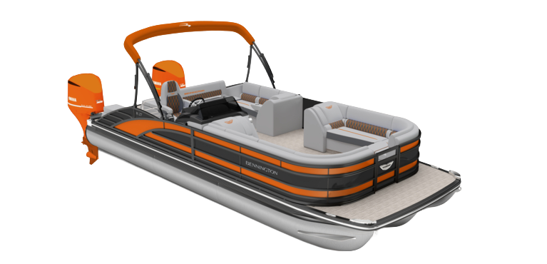

INFO
Boat Specefications
- MSRP: $250,984
- ROA: 28'-3"
- Beam: 8'6"
- Engine: Mercury 425XLV10
- Performance Package: ESP
- Floorplan: Fastback
- Exterior Main Color: Anthracite
- Exterior Accent Color: Matte Black
- Interior Main Color: Modesto Brown Veneto
- Interior Accent Color: Mythos
- Interior Furniture Style/Trim: Sport
What's New for 2027
2027 Updates
- Exterior Rail Redesign W Integrated Docking Lights: The all new R-Series is a bold evolution of Bennington design, blending luxuy craftsmanship with modern innovation. Featuring exclusive DockSpeed Design, autimotive-inspired integrating docking and navigation lights, signature aft rail accent lighting, premium cladded exterior pannels, and dynamic rail extrusions, the R-Series delivers a sleek, contemporary presence unlike anything else on the water. Purpose-built to stand out and engineered to perform, it;s premium pontoon design reimagined.
- Arch Mounting Cassette: A stronger, sleeker evolution of traditional arch foundations, the Cladded Arch Base replaces bulky tubular structures with an innovative cassette-style design that maximizes interior space and simplifies arch replacment or upgrades. The benefit is greater floorplan flexibility, improved long-term duraility, elevated fit-and-finish, and confidence backed by a design engineered to minimize wear and reduce warranty concerns.
- Stage 6 Audio Package: Stage 6 Audio Package delivers premium Rockford Fosgate Performacne with a PMX-6BB source unit, six RGB-capable M2 speakers, two RGB-capable M2 arch speaker, and a powerful 10" PMPS-10 powered subwoofer/amplifier combo. Driven by dual PM-600X4 amplifiers and complemented by a PMX-R20B aft remote, this system provides exceptional clarity, powerful bass, customizable lighting, and immersive sound coverage throughout the boat, creating a refined entertainment experience for every outing on the water.
- Comfort Step Ladder: Features wide, stair-style steps that provide easier, more comfortable boarding from the water. The ergonomic design improves stability and confidence for swimmers of all ages, creating a safer and more enjoyable on-water experience.
- Dockease Camera: Provides a dedicated view of the port-bow blind spot to improve visibility during docking and low-speed maneuvering. Mounted beneath the deck on the port nose cone and displayed on the available 12" Vivid UX Main Display, it helps captais dock with greater confidence, percision, and control.